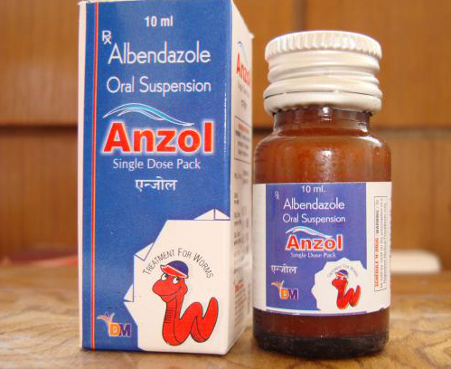

Indications:- Hookworm,Tapeworm.
- 
Albendazole Suspension

Albendazole
SUSPENSION PRESENTATION:
Each 5 ml contains:
Albendazole IP 200 mg

Albendazole Suspension:
Albendazole is an anthelmintic or anti-worm medication. It prevents newly hatched insect larvae (worms) from growing or multiplying in your body.
Albendazole is used as a drug indicated for the treatment of a variety of worm infestations. It is a broad spectrum anthelmintic, effective against roundworms, tapeworms, Flatworms, Ascariasis, Hookworm, and flukes of humans.
It has been demonstrated by recent studies that Albendazole suspension shows better symptoms relief compared with the modest improvement of worm infestations like Flatworms, Flukes, Tapeworm, Cysticercosis, Ascariasis, Hookworm.

Albendazole is the benzimidazole derivative. it has broad spectrum
activity and is effective against many diseases.
It has inhibitory effect on tubulin polymerization
It is effective against:
- Flatworms
- Flukes/trematodes
- Fasciolosis
- Tapeworm/cestodes
- Cysticercosis
- Echinococcosis
- Nematodes
- Enterobiasis (pinworm infection)
- Trichuriasis (whipworm infection)
- Ascariasis
- Hookworm
- Cutaneous larva migrans (caused by Ancylostoma)
- Filariasis


Absorption: Albendazole is poorly absorbed from the GI tract; however, it is rapidly converted to its primary active metabolite, albendazole sulfoxide, prior to reaching systemic circulation. Fatty meals enhance bioavailability, as indicated by up to a 5-fold increase in plasma concentration in albendazole sulfoxide. Albendazole sulfoxide plasma concentrations are dose dependent. C max is achieved in 2 to 5 h and ranges from 0.46 to 1.58 mcg/mL, with a fatty meal.
Distribution: Albendazole sulfoxide is 70% protein bound and widely distributed throughout the body. Metabolism After metabolism in the liver to albendazole sulfoxide, it is further metabolized to albendazole sulfone and other oxidative metabolites.
Protein Binding:
It is 70% bound to plasma proteins.
Metabolism:
It undergoes sulfonation in the liver.
Elimination: Albendazole sulfoxide elimination is 8 to 12 h. Biliary elimination of albendazole sulfoxide results in biliary concentrations similar to plasma concentration. Urinary excretion is a minor elimination pathway (less than 1%).

- Albendazole alterations in the intestine of the worms by inhibiting the energy production and then leads to immobilization and death of the parasite
- It binds to colchine binding site of the tubulin thus inhibits its assembling into microtubules
- It prevents uptake of glucose into the larvae

BEFORE TAKING THIS MEDICINE TELL THE DOCTOR ABOUT ANY MEDICAL PROBLEMS AND ALLERGIES THAT A CHILD HAS OR HAD.
Cimetidine In hydatid cyst patients, albendazole sulfoxide concentrations in bile and cystic fluid may be increased about 2-fold; however, plasma levels are unchanged 4 h after dosing.Dexamethasone Albendazole C trough at steady state was about 56% higher when coadministered with dexamethasone 8 mg. Praziquantel Albendazole sulfoxide C max may be elevated about 50%, increasing the risk of adverse reactions. Theophylline Although theophylline pharmacokinetics are unchanged by albendazole, monitor plasma concentrations during and after albendazole treatment.

The most commonly reported adverse effects are:
- Fever
- Sore throat
- Headache

Caution in Pregnancy and Lactation.

Store in a well closed container in cool, dry place, away from direct heat and light.

From the above discussion, it can be concluded that this Albendazole suspension could improve the quality of life of children with Flatworms, Flukes/trematode, Tapeworm/cestodes, Cysticercosis, Echinococcosis, Nematodes, Enterobiasis (pinworm infection), Ascariasis, Hookworm, Cutaneous larva migrans (caused by Ancylostoma), Filariasis.
We are making superior quality of Albendazole Suspension that is used to treat a variety of variety of worm infestations like Flatworms, Flukes, Tapeworm, Cysticercosis, Ascariasis, Hookworm. Our offered Suspension is processed using high grade chemical compounds and other required drugs by our experienced quality controllers that ensure its quality, purity and chemical properties. Highly treasured among the clients for its reliability, accurate composition, excellent physical and purity, this Suspension is offered to our esteemed clients at the market leading prices.